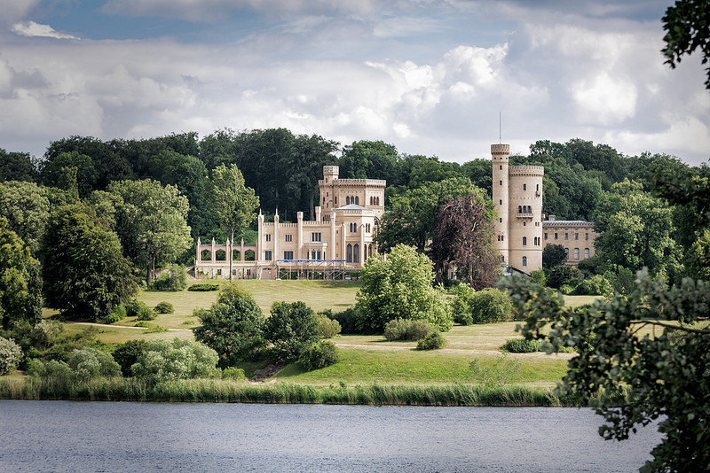

Castelul Neuschwanstein
Palatul s-a dorit a fi un refugiu personal al regelui retras, dar a fost deschis pentru publicul plătitor imediat după moartea sa în 1886. De atunci, peste 60 de milioane de oameni au vizitat Castelul Neuschwanstein. Peste 1,3 milioane de turiști îl vizitează anual, cu un maxim de 6.000 pe zi, în timpul verii. Palatul a apărut în mai multe filme și a fost sursa de inspirație pentru Castelul Frumoasei din Pădurea Adormită din Disneyland și, mai târziu, pentru alte structuri similare. Castelul este una dintre cele mai renumite atracții turistice din Germania. În apropiere se află Castelul Hohenschwangau. Localitatea Schwangau se află la o altitudine de 800 m, la granița de sud-vest a landului german Bavaria. Împrejurimile sale sunt caracterizate de tranziția între poalele Alpilor, în partea de sud (spre granița cu Austria aflată în apropiere) și un peisaj deluros în partea de nord care apare plat prin comparație. În Evul Mediu, trei castele dominau această zonă. Unul a fost numit Castelul Schwanstein.În 1832, tatăl lui Ludovic, regele Maximilian al II-lea al Bavariei, a cumpărat ruinele sale pentru a le înlocui cu confortabilul palat neo-gotic cunoscut sub numele de Castelul Hohenschwangau. Finalizat în 1837, palatul a devenit reședința de vară a familiei sale, iar fiul său mai mare Ludovic (născut în 1845) și-a petrecut aici o mare parte a copilăriei sale. Castelul Vorderhohenschwangau și Castelul Hinterhohenschwangau erau așezate pe un deal accidentat cu vedere spre Castelul Schwanstein, două lacuri din apropiere (Alpsee și Schwansee) și satul. Separate doar de un șanț cu apă, ele erau formate dintr-o sală, un turn de pază și un turn-locuință fortificat. În secolul al 19-lea din castele medievale gemene au rămas doar ruine, dar cel din Hinterhohenschwangau a servit ca un loc de veghe cunoscut sub numele de Sylphenturm.
Galerie de imagini
Micsorati fereastra penteu a vedea schimbari.
Castelul Babelsberg
(Muntele lui Babel) este cel mai mare cartier al orașului Potsdam, unde în prezent se află un studiou cinematografic german. Tot aici în cartier se află gimnaziul (BFG) și Școala Superioară de actorie (HFF). Originea etimologică a cartierului provine din limba slavă cu variantele Pavelberg, Babertsberg, Boberow ultimul termen înseamnă locul unde sunt castori. Ulterior prin anul 1938, denumirea locului a fost schimbată după denumirea biblică Babel, și din același an Babelsberg aparține de Potsdam. O mică parte a cartierului aparține din 1920 de Berlin. Localitatea este amintită prima dată în anul 1375 în timpul domniei lui Carol al IV-lea al Sfântului Imperiu Roman. Babelsberg a suferit mult în timpul războiului de treizeci de ani. Localitatea a început din nou să fie repopulată cu coloniști abia prin anul 1750 în timpul lui Frederic al II-lea al Prusiei, supranumit și Frederic cel Mare. Coloniștii au fost agricultori, țesători care au sosit din Boemia. Observatorul din Berlin și-a mutat activitatea, în 1913, la noul observator construit în parcul Babelsberg. A devenit Institutul de Astrofizică din Potsdam (în germană Leibniz-Institut für Astrophysik Potsdam), în 1990.
Click pe poza pentru a o schimba!
Apasa pe noul buton creat pentru a-l sterge
Castelul Hohenzollern
Se povesteşte că, undeva în jurul anului 1061, doi cavaleri din Swabia (S-V Germaniei de azi), pe numele lor Burchard şi Wezil von Zollern, au fost ucişi într-o bătălie. Un secol mai târziu, un document pomeneşte despre Castelul Zollern, din apropiere de Hechingen, ca fiind o fortăreaţă solidă şi impresionantă. Construită pe dealul ce i-a dat numele (885 m faţă de nivelul mării şi 250 m faţă de platoul submontan), chiar la poalele Munţilor Schwäbische Alb, reşedinţa familiei va suferit multe transformări în decursul secolelor, mai ales după ce linia dinastică se va împărţi în două mari ramuri: cea şvăbească şi cea franconiană (din aceasta vor apărea mai târziu regi ai Prusiei, apoi împăraţi ai Germaniei). În secolul IV, numele se va schimba din „Zollern” în „Hohenzollern”, iar din linia şvăbească se vor desprinde alte trei ramnificaţii: Hohenzollern-Hechingen, Hohenzollern-Sigmaringen şi Hohenzollern-Haigerloch. În 1423, în urma unei dispute între membrii familiei Hohenzollern rămaşi în Swabia, castelul a fost distrus în întregime. Reconstrucţia lui 30 de ani mai târziu i se datorează contelui Jost Nicholas von Hohenzollern, care a dat marelui castel o formă de potcoavă, cu trei turnuri spre nord-vest. Acestă fortificaţie medievală va servi drept model pentru castelul din secolul XIX şi din ea se păstrează până azi doar capela Sf.Mihail (terminată în 1461).